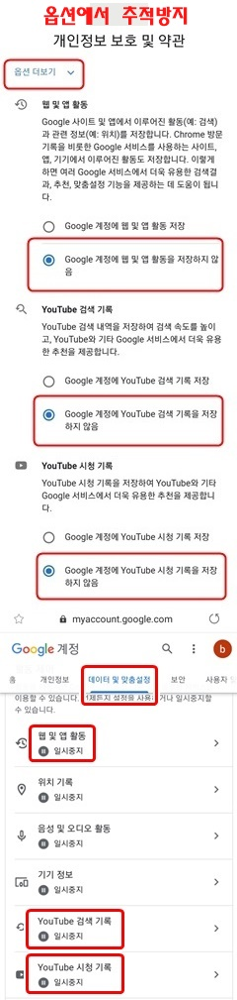
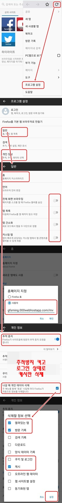
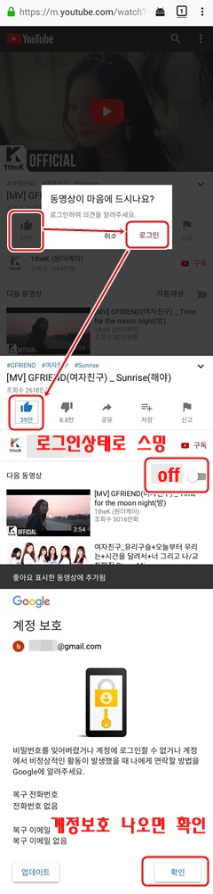

|
GFRIEND 유튜브 스밍방법
추적방지 설정으로 새로운 구글계정 생성
유튜브 로그인 상태로 스밍이 더 나음
조회수가 덜 깍이는 아래 주소를 Homepage로 설정
|
||
|
1. 새 구글계정 생성

|
2. 파이어폭스 설정
PC파폭도 비슷하게 설정

|
3. 유튜브 로그인 설정

|
|
파이어폭스 PC 설정
유튜브 로그인상태로 스밍 후 종료 버튼 클릭
조회수가 덜 깍이는 아래 주소를 Homepage로 설정
|
|
Naver TV 스밍방법
1분 Auto Refresh 설정 Auto Refresh 설치하기
270p 1개 반복, 브라우저 설정 미디어 자동재생
|